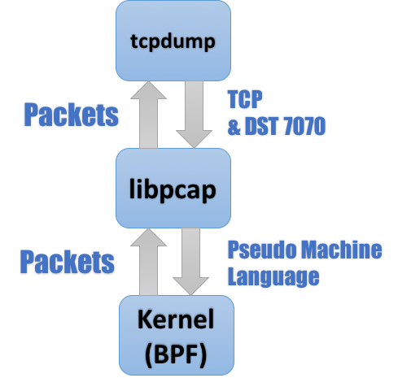
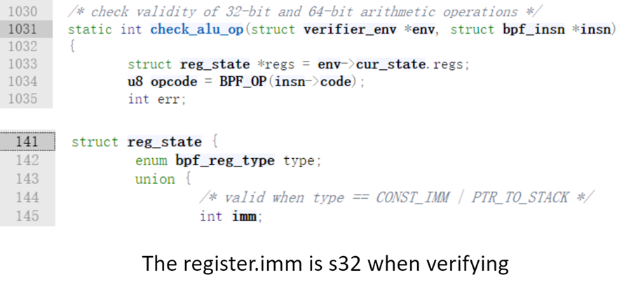
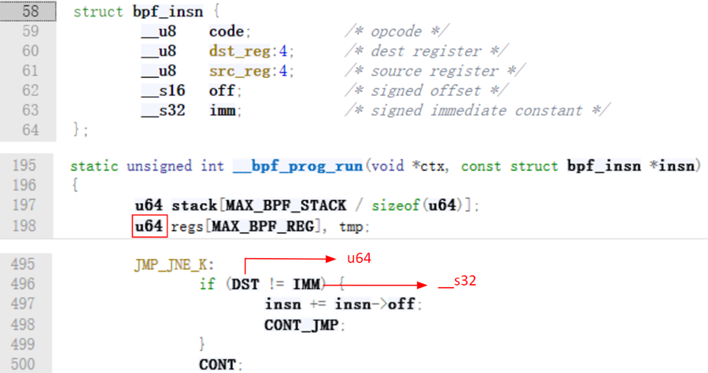
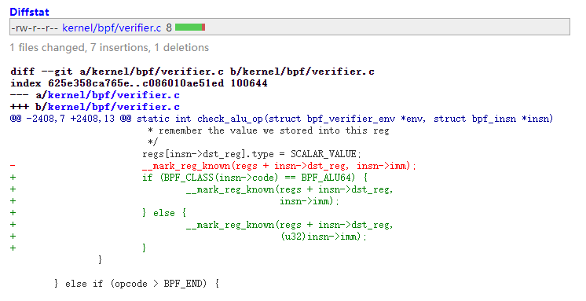
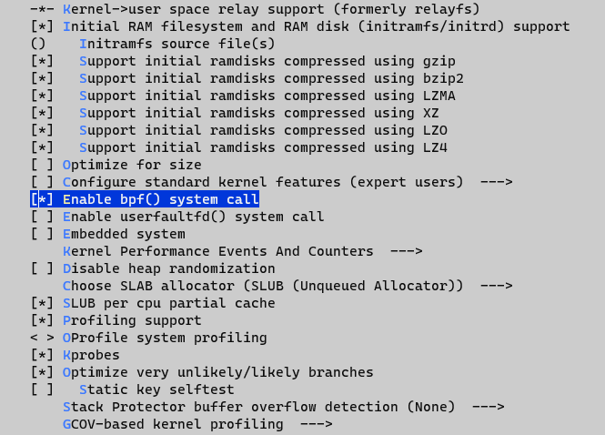
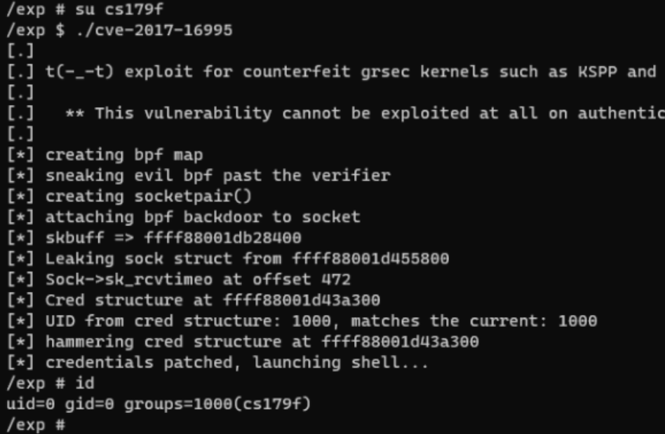

CVE-2017-16995 分析 & 复现
Introduction
本漏洞产生的原因是 Kernel 版本 <4.13.9 的 eBPF 模块中存在一段不正确的符号扩展逻辑，使得攻击者可以构造输入让 verifier 的安全检查失效从而达到本地提权的效果。
BPF (Berkeley Packet Filter)
BPF 顾名思义是 Linux 内核中的一个包过滤模块。举个简单的例子，我们熟悉的 tcpdump 中过滤流量包的本质就是调用了 BPF 模块。
下图是一个具体的调用链，libpcap
收到包过滤的表达式比如tcp and dst port 7070后将其转义为伪机器码传给
BPF 模块，BPF 再将包过滤的结果往上返回最终给到 tcpdump 输出。

这里的伪机器码大概是这样的东西
1 | $ sudo tcpdump -d -i lo tcp and dst port 7070 |
所以这个 BPF 模块可以理解为一个虚拟机一样的东西，其可以执行一些用来过滤包的小程序。
eBPF (extended BPF)
随着技术的发展，BPF 逐渐升级成为了 eBPF 模块并添加到了内核 (kernel/bpf) 当中。eBPF 改进了一些接口设计和易用性的东西，使其能在内核的更多场景中发挥作用。
升级后的 eBPF 的架构大概如下图所示

用户可以将自己准备的 BPF Program 提交到 eBPF 模块，通过 Verifier 的安全检查后，这个 BPF Program 将可以被以内核态执行。在这个过程中，用户可以通过一块叫 Map 的共享内存与BPF通信。下面是一些相关的系统调用
1 | syscall(__NR_bpf, BPF_MAP_CREATE, &attr, sizeof(attr)) |
Verifier
经过前面的描述我们可以认识到，如果 eBPF 模块没有
Verifier，那么这会是一个非常危险的模块因为用户可以直接通过它在内核态执行任意代码。所以这里的安全检查就显得至关重要了。Verifier
会在 BPF Program 执行前对其做详细的检查，BPF Program
如果检查不通过会被直接拒绝，否则就会加载到__bpf_prog_run函数中执行。
Verifier 的检查分为两个部分。
第一个部分的检查主要是确保 BPF Program 足够简单，这样才能在有限的时间内对其进行彻底的分析，这一部分的检查主要要求被测程序
- 指令数量不能过多
- 不能存在循环
- 只能有一个函数
- 不能有越界跳转
通过第一个检查的程序会进入到第二部分的详细检查，这里 Verifier 会对 BPF Program 的所有路径做分析并模拟执行，这里主要关注两个函数
check_reg_argcheck_mem_access
这两个函数的作用就是检查寄存器参数是否合法以及内存访问是否在沙箱范围内。
由于不想写太长前面很多东西没有细讲，有兴趣详细了解的选手可以翻阅:
Vulnerability
到这里这个 Verifier 看起来就很安全了，但是实际上模拟执行的过程中还是出了问题。

由上图可以看到在模拟执行过程中，Verifier
模拟的寄存器存的立即数是int，也就是s32类型。

但是在实际执行的函数__bpf_prog_run当中，寄存器保存的其实是u64类型的值，这样就会引发安全问题。
下面以一个例子来说明。
1 | PROG: |
在这段 BPF Program 当中，第一行将 r9
赋值为0xffffffff，第二行判断 r9
是否等于0xffffffff，如果相等，程序执行 [2], [3]
并退出，否则跳转到指令 [4]。
在 Verifier 模拟执行到[1]时，这里的跳转条件显然不满足 r9
刚被赋值为0xffffffff，结果显然。所以 Verifier
继续往下模拟执行 [2], [3]。由于[3]
是EXIT，此时也没有别的代码可能被执行，故 Verifier
返回，安全检查通过。但是在实际执行的时候寄存器是 64
位，所以这里其实会涉及一个s32到u64的符号扩展，C
语言对于这种符号扩展的实现是先扩展位数再符号化，即(u64)s32Int -> (u64)((s64) s32Int)，附上这里
JNE 对应的汇编
1 | 0xffffffff81173e7f <__bpf_prog_run+2287> movsxd rdx, dword ptr [rbx + 4] |
这里的movsxd将立即数0xffffffff符号扩展到 64
位即0xffffffffffffffff装入 rdx，然后用 rdx
去和跳转条件中的0xffffffff作比较，对于无符号数而言，0xffffffffffffffff和0xffffffff显然是不相等的。所以实际执行到
JNE 的时候，跳转条件为真，程序会执行到未经过安全检查的 [4]
以及之后的指令。这就是本漏洞的原理。
Patch
在复现之前先看一下这个漏洞的 patch

这里其实就对指令的操作类型不是ALU64的时候对指令中的立即数加了一个 u32 的强制类型转换，这里其实就是修改了这个符号扩展的顺序。我做一个对比各位就应该明白了。
1 | s32 to u64 |
Reproducing Environment (for WSL)
下载4.4.110版本的内核代码
修改 makefile 使其最大页空间为 4M。(refer)
在 menuconfig
里选上General Setup -> Enable bpf() system call

编译 1
2make menuconfig
make bzImage
用 busybox（或者别的东西）打包构建文件系统。
最后准备启动脚本
1 | qemu-system-x86_64 \ |
Exploit
https://www.exploit-db.com/exploits/45010

Reference
Further reading
eBPF 在这之后又爆出来的不少漏洞，如果想了解新的漏洞，请参考